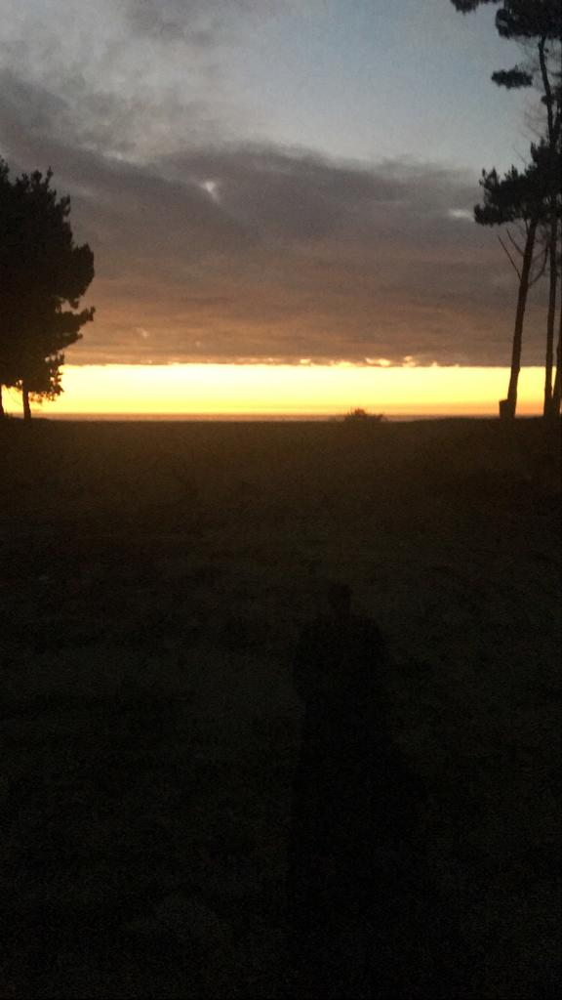
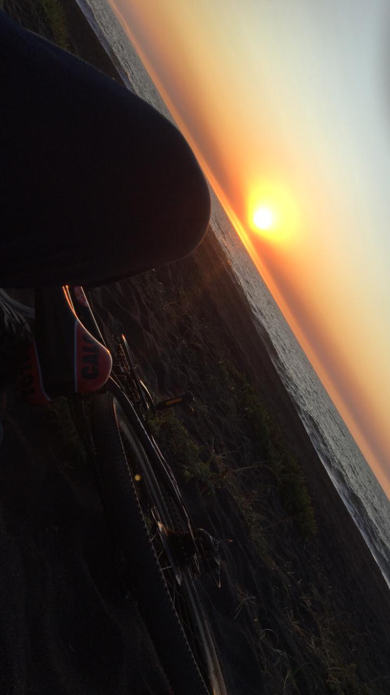

SALVADOR MELLADO
Blog de viajes realizados a lo largo de chile, Seguiremos la siguiente ruta: Lomas Coloradas, San Pedro de la Paz, Concepcion y por ultimo Hualpen. Este viaje se realizo en bicicleta y en un solo dia.

Playa de Lomas Coloradas

Playa de Lomas Coloradas